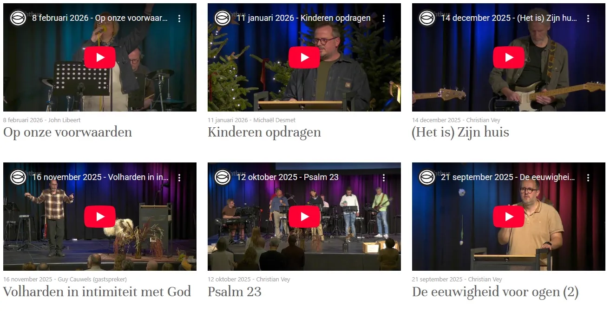
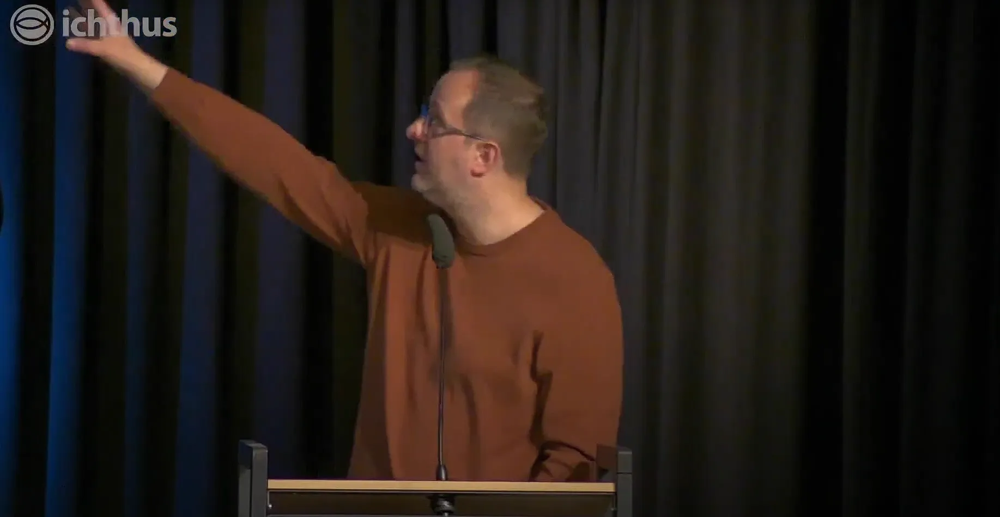
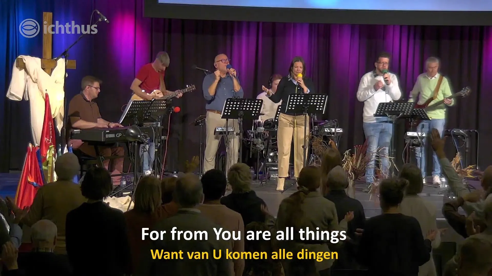

Ichthus
Ichthus Kortrijk is my local pentacostal church where I contribute as livestream member
About
Ichthus is the church I grew up in and eventually contributed to. As a young teen I would try to help out with supervising the toddlers but when the pandemic hit there was a need to stay connected and do sermons. Someone took initiative and started streaming from their Iphone, it worked and it was suprisingly high quality. After a while, they kickstarted the livestream team which I joined.
Many of us did not have much experience, I had the most experience as I streamed on Twitch before and I knew about OBS. Because of that, I initially was tasked with figuring out all software of the stream. My dad and my oldest brother were also on the team, which made collaboration fun and enjoyable.
Over time we evolved from webcams and a small room in our church to the main hall where we usually have our sermons. We switched to a Canon camera from my dad and a random video recorder, fed them through a low quality HMDI to USB and plugged it in the laptop. In a way, it was beautifully simple but looking back it was also definitely amateuristic. Now we have 2 high quality, remote controlled camera's, robust setup both in software and hardware and several ways to setup.
Besides the livestreaming and camera's, I also volunteer to translate the sermon or anything to English as the sermons are usually given in Dutch.
Screenshots


